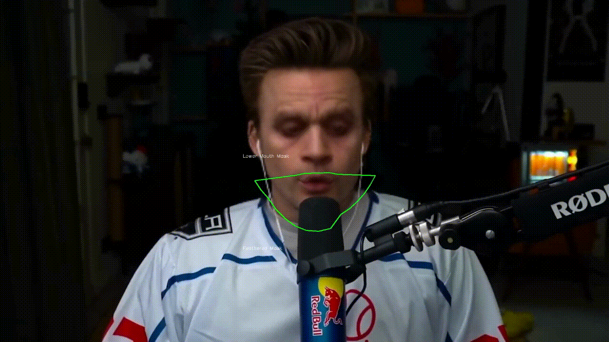

A focused desktop app, not a sprawling dashboard. Each feature below ships in the box — no add-ons, no plugins, no API keys to get started.
Pick a face, hit start. Phantom Cast captures your webcam at 30 fps, runs it through CUDA inference, and outputs the swapped feed to an OBS virtual camera that any app can use as a video source.
Drop in a 4K source, choose a target identity, render. GPEN-512 super-resolves the swapped face region so it stays crisp under broadcast-grade compression.
Multiple actors in the shot? Drop in source thumbnails, drag them to their target identities. Phantom Cast tracks each one independently — no cross-bleed, no last-second guessing.

When the face-only swap looks like a mask, Hyperswap extends the inference region to include hairline, ears, and jaw silhouette. Slower, but indistinguishable in close-ups.
Queue 50 clips overnight. Each job is checkpointed; killing the app and resuming the next morning picks up exactly where it left off. No re-render, no re-uploads (because there are no uploads).
No black-box "your GPU isn't supported" message. Phantom Cast tells you exactly which step of CUDA detection failed, what to do about it, and offers a CPU fallback so you can keep working while you fix it.
There is no upload pipeline. There are no servers that could leak. Inference is local — full stop. The only network traffic Phantom Cast generates is licensing and version checks.
# network monitor — phantomcast running an active 4K render $ sudo netstat -i -p TCP | grep phantomcast phantomcast.exe 54321 licensing.phantomcast.space:443 ESTABLISHED (1.2 KB / hr) phantomcast.exe 54322 dl.phantomcast.space:443 TIME_WAIT (version check) # bytes uploaded total since launch: ~ 1.4 KB # license heartbeat only # video / audio bytes transmitted: ~ 0 bytes
7-day free trial. Full feature access. No card.